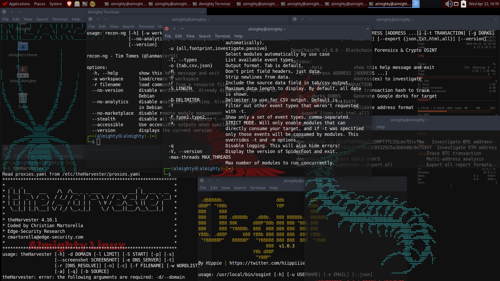
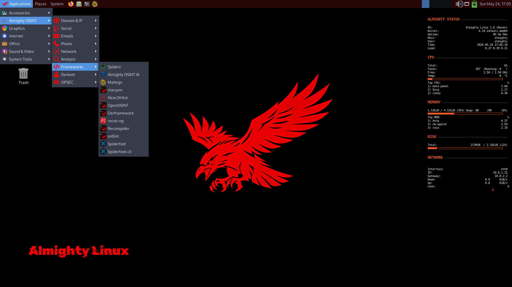
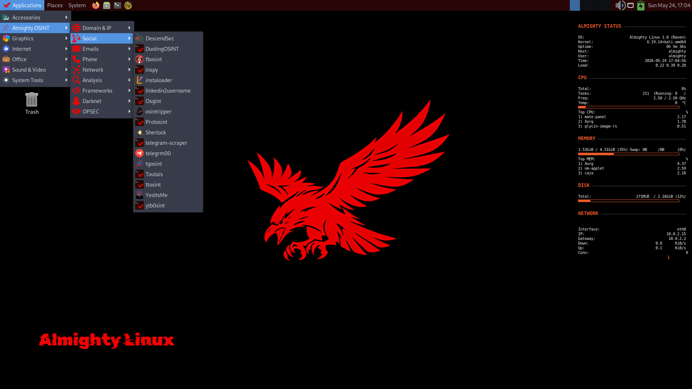
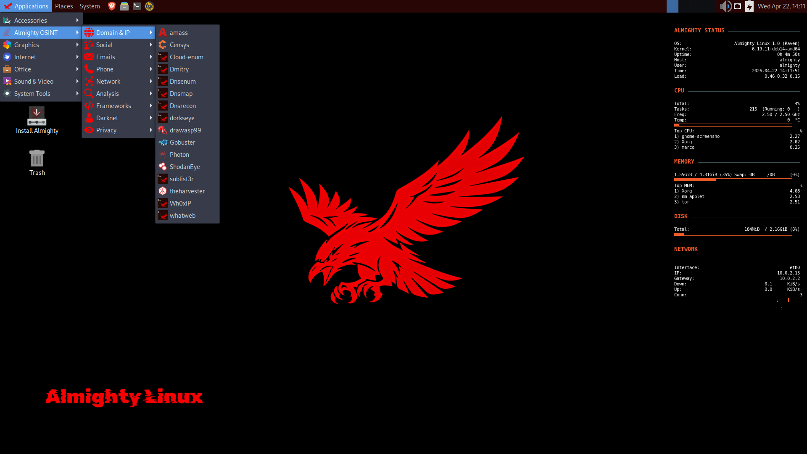
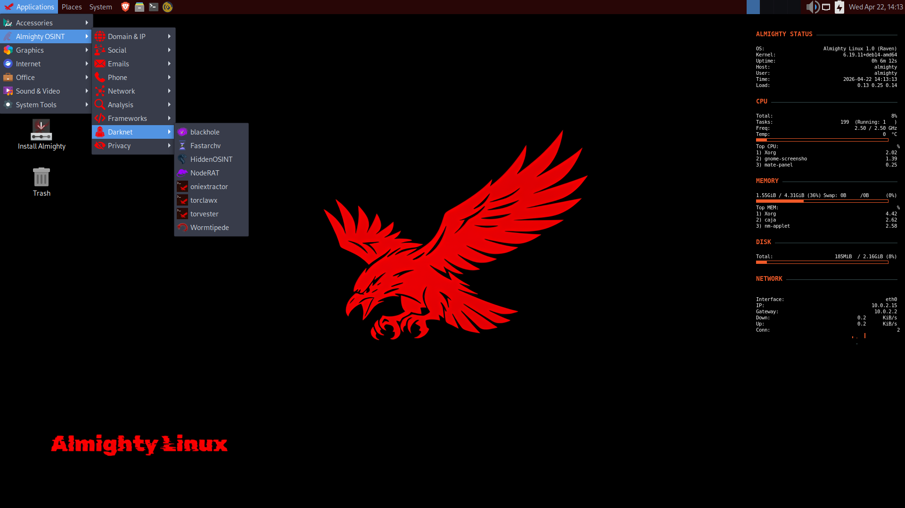
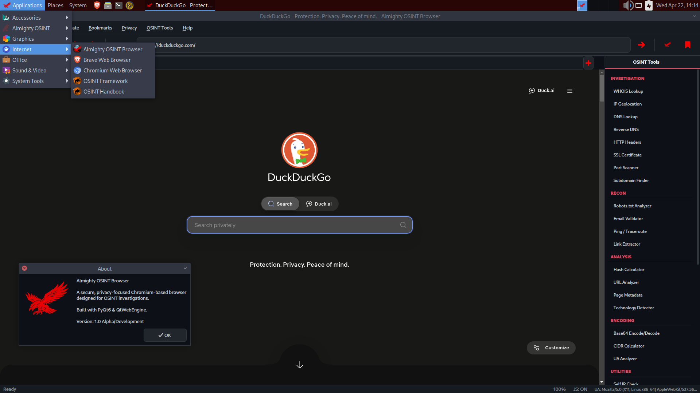
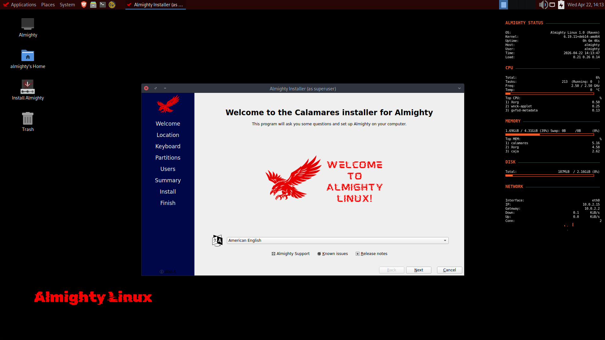

SCROLL
Almighty Linux is a hybrid Linux distribution based on Debian Testing and Kali Linux, purpose-built for intelligence gathering and OSINT operations.
It ships with 79 OSINT and security tools, 49 custom-built tools and a purpose-built browser developed exclusively for Almighty Linux, plus 30 industry-standard tools from the Kali repositories.
The distribution features a hardened kernel tuning profile, along with a comprehensive suite of anonymity, trace-cleaning, isolation, and security tools designed to maintain operational security during intelligence gathering. It also includes the Almighty OSINT Browser — a custom Chromium-based browser with integrated OSINT utilities and user-agent spoofing capabilities. The distribution uses MATE as its desktop environment.

Built from the ground up for intelligence professionals and security researchers.
A curated arsenal of 49 custom-built scripts and 30 industry-standard Kali packages covering social media profiling, dark web reconnaissance, network analysis, and digital forensics.
Custom Chromium-based browser with built-in fingerprint protection, canvas/WebGL/AudioContext spoofing, WebRTC blocking, and integrated OSINT utilities including Base64, CIDR calculator, and email validation.
Multi-layered security from bootloader to userspace: ASLR, stack randomization, Spectre/Meltdown mitigations, BPF hardening, PTrace restrictions, and automatic permission enforcement on every boot.
Full Tor integration, MAC address spoofing, hostname randomization, DNS changer, forensic trace cleaner, and application isolation via Firejail and Bubblewrap sandboxing profiles.
Eight dedicated onion network tools: site archivers, search engine aggregators, link extractors, crypto wallet hunters, and hidden service forensics — all operating through Tor circuits.
Lightweight, professional MATE desktop environment with custom Conky system monitors, branded terminal splash screens, and an interface designed for extended investigation sessions.





